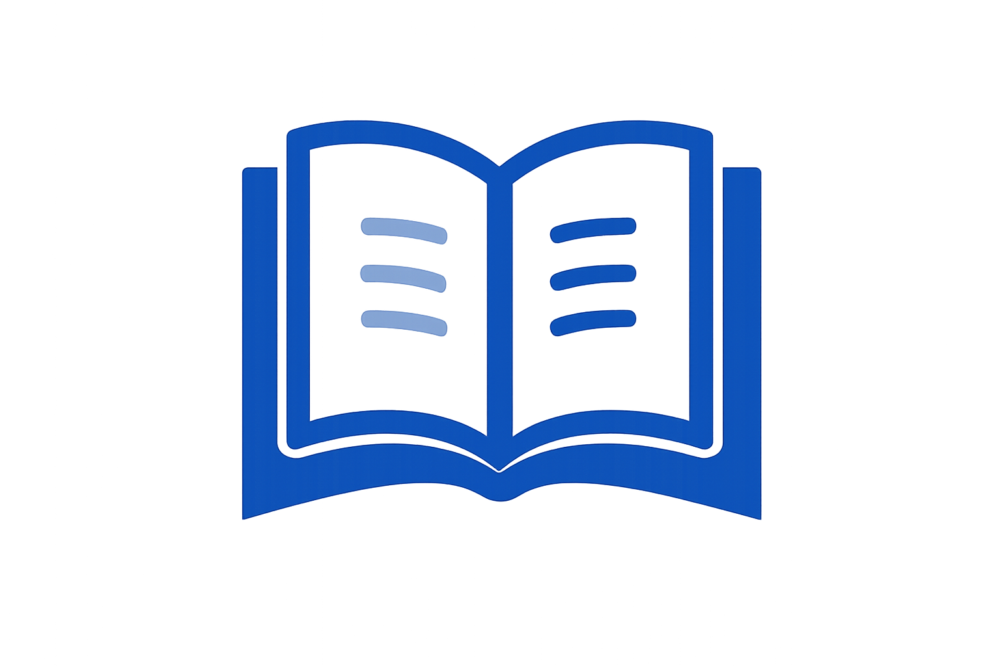
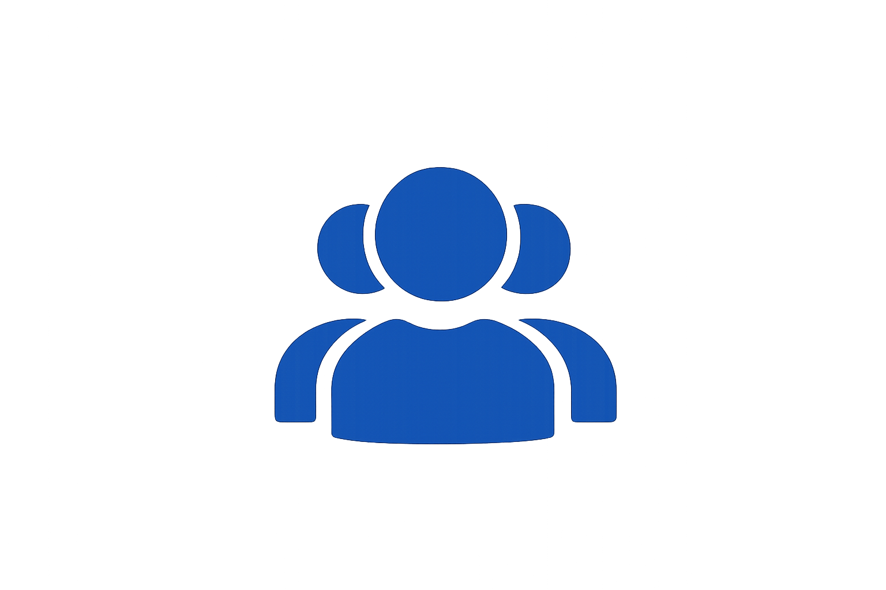
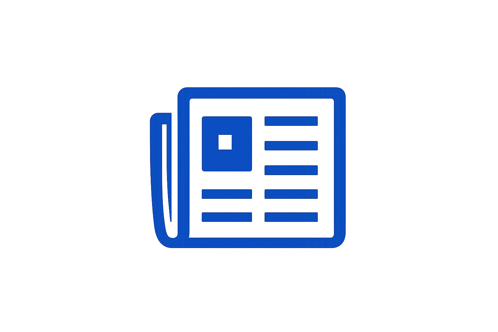

PRÓXIMOS EVENTOS
Enterate de todas las actividades que tenemos para vos.
"Un libro es un sueño que tienes en tus manos"


Enterate de todas las actividades que tenemos para vos.
Un encuentro para compartir lecturas, opiniones e ideas con otros amantes de los libros.
18:00 hs Biblioteca Pública Municipal
Actividad destinada a desarrollar la creatividad y la expresión escrita.
17:00 hs Biblioteca Pública Municipal
Espacio abierto para compartir conocimientos, experiencias y conversar sobre diferentes temas.
18:30 hs Biblioteca Pública Municipal
Una jornada con cuentos, juegos y actividades pensadas especialmente para los más pequeños.
16:00 hs Biblioteca Pública Municipal
También podés participar de nuestras propuestas culturales y educativas durante todo el año.

Espacios para compartir libros, opiniones y experiencias de lectura.

Propuestas educativas y culturales para diferentes edades e intereses.

Actividades abiertas a la comunidad para aprender, conversar y compartir.
Para conocer las fechas, horarios y actividades disponibles, podés comunicarte con nosotros o acercarte a la biblioteca.
CONTACTANOS